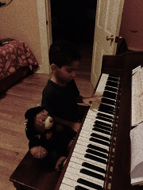

when it comes to what i like to do, i can never say one thing, i love to make music, videos, taking photos, programming/coding, editing, animating, i know there’s stuff im forgetting but thats the reason i consider myself an artist. I think i’ve always found a joy in creating, it never mattered to me what i would be creating, like for example i would always get excited when i would be on a website and i saw an option that said something like “create” or “start new project” then i would just get excited. After everything that ive done, i always returned to making music, although i still got good at all the other stuff i did, music always came back to me. my parents always played music around me that wasnt always the same as what other people usually listened to, but i obviously grew to like it all anyway. my older sister Toni always played music videos around me, then she started to show me music videos and i just grew to love them, i think i loved the idea of having all these songs i love being visualized. It’s like i saw the music i already loved so much, come to life. I can usually think of colors or a scenario when i listen to music, I think it has something to do with synesthesia, which is a condition to human brain where it makes you can see colors depending on the songs you hear, or the chords you hear, etc. all of these traits have made it so i hear music differently from most people. i mean i dont think i've ever cried to a song, that’s not what i mean. i just feel songs more deeply than most people do, there have even been a lot of songs I really like that everyone else around me hates. it's the reason my mom would always gets annoyed when i either played the same songs or if i played older songs. That’s not as bad as the attacks and criticism I got from people in school and various clubs, groups, etc. i just enjoyed doing different things than most people, so i never fit in with many people in my high school. After a conversation with my mom i realized that i can still live a good life if i keep doing what i’ve loved doing for almost my whole life

i feel like everything i love to make can really make a difference in the world, and this website is a place to share my work and connect with people that support me and what i believe in
thank you for reading, ily :)
home